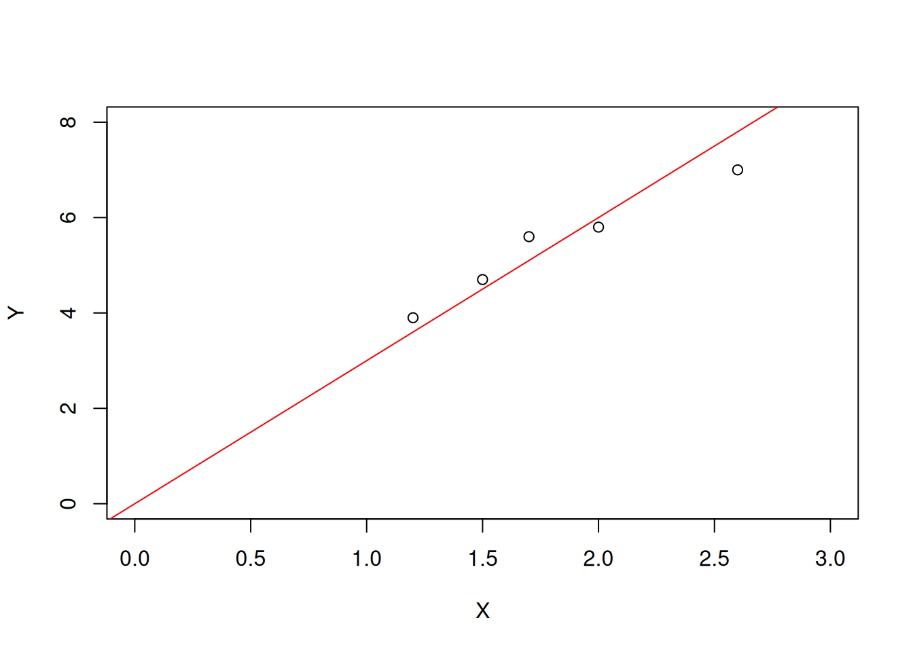
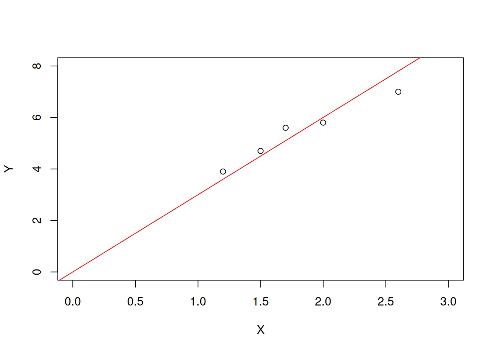

X=c(12,15,17,20,26)/10;X[1] 1.2 1.5 1.7 2.0 2.6Y=c(39,47,56,58,70)/10;Y[1] 3.9 4.7 5.6 5.8 7.0n=length(Y);n[1] 5Xb=mean(X);Xb[1] 1.8Yb=mean(Y);Yb[1] 5.4plot(X,Y,xlim=c(0,3),ylim=c(0,8))
abline(a=0,b=3,col="red")
Este método de estimação é um dos métodos mais antigos de estimação. Ele é utilizado desde o século XVIII. A ideia é bem simples. Vamos inicialmente definir para o caso uniparamétrico:
Seja \(X\) uma variável aleatória com a seguinte f.d.p. ou f.p. , \(f(x\;|\theta)\), suporte \(A\) , espaço paramétrico \(\Theta\) e \(E_{\theta}(X^r)<\infty,\; r=1,2,\dots\).
Seja a amostra aleatória \(X_1,X_2,\ldots,X_n\) de \(X\) . Vamos igualar o primeiro populacional ao primeiro momento amostral, isto é,
\[E_{\theta}(X)= \bar{X}.\]
Vamos fazer alguns exemplos para fixar o conceito calculando também sua variância amostral.
Exemplo 1: Considere \(X \sim U( (0,\theta)\) com
\[E_{\theta}(X)=\frac{\theta}{2}\quad \text{e} \quad V(X)=\frac{\theta^2}{12}.\]
Assim,
\[E_{\theta}(X)= \frac{\theta}{2}=\bar{X}.\]
O valor de \(\theta\) é:
\[\theta=2\bar{X}.\]
Assim o estimador pelo m?todo dos momentos de \(\theta\) é dado por:
\[\widehat{\theta}=T_1=2\bar{X}.\]
Note que:
\[E(\bar{X})= \mu = \frac{\theta}{2}.\]
Assim
\[E(T_1)=E(2\bar{X})=2\;E(\bar{X})=2\;\frac{\theta}{2}=\theta,\] \(T_1\) é um estimador não viciado de \(\theta\).
Note que:
\[Var(\bar{X})=\frac{ \frac{\theta^2}{12}}{n}=\frac{\theta^2}{12n}.\]
Assim,
\[Var(T_1)=Var(2\bar{X})=4\;Var(\bar{X})=4\;\frac{\theta^2}{12n}=\frac{\theta^2}{3n}.\]
Exemplo 2: Considere \(X \sim U_d( A),\;\;A=\{1,2,\ldots,\theta\}\)
O espaço paramétrico é dado por:
\[\Theta=\{1,2,\ldots\}.\]
Sabemos que:
\[E_{\theta}(X)=\frac{1+\theta}{2}\;\;\;;\; V(X)=\frac{\theta^2 -1}{12}.\]
Assim,
\[E_{\theta}(X)= \frac{1+\theta}{2}=\bar{X}.\]
O valor de \(\theta\) é:
\[\theta=2\bar{X} -1.\]
Assim o estimador pelo m?todo dos momentos de \(\theta\) é dado por:
\[\widehat{\theta}=T_2=2\bar{X}- 1.\]
Note que:
\[E(\bar{X})=\mu=\frac{1+\theta}{2}.\]
Assim
\[E(T_2)=E(2\bar{X} -1)=2\;E(\bar{X})-1=2\;\frac{1+\theta}{2}-1=\theta,\]
\(T_2\) é um estimador não viciado de \(\theta\).
Note que:
\[Var(\bar{X})=\frac{ \frac{\theta^2 -1}{12}}{n}=\frac{\theta^2 -1}{12n}.\]
Assim
\[Var(T_2)=Var(2\bar{X}-1)=4\;Var(\bar{X})=4\;\frac{\theta^2-1}{12n}=\frac{\theta^2-1}{3n}.\]
Exemplo 3: Seja \(X \sim Normal (\mu, 9).\)
Sabemos que:
\[A=(-\infty,\infty)\;\;;\;\; \Theta= (-\infty,\infty).\]
Além disso:
\[E_{\mu}=\mu\;\;;\;\;V(X)=9.\]
Logo,
\[E_{\mu}=\mu=\bar{X}.\]
Assim
\[\widehat{\mu}=T_3=\bar{X}\]
é o estimador pelo método dos momentos para \(\mu\).
Note que
\[E(T_3)= \mu\;\;\;\;Var(T_3)= \frac{9}{n}.\]
Exemplo 4: Agora considere \(X \sim Exponencial (\lambda).\)
Sabemos que:
\[A=(0,\infty)\;\;;\;\; \Theta= (0,\infty).\]
Além disso:
\[E_{\lambda}=\frac{1}{\lambda}\;\;;\;\;V(X)=\frac{1}{\lambda^2}.\]
O estimador pelo método dos momentos é dado por:
\[E_{\lambda}=\frac{1}{\lambda}=\bar{X}.\]
Logo,
\[\widehat{\lambda}=T_4=\frac{1}{\bar{X}}.\]
Sabemos que
\[S \sim Gama(n,\lambda). \]
Note que:
\[M_S(t)=\left[ \frac{\lambda}{\lambda -t}\right]^n, \;t <\lambda.\]
A função geradora de momentos de \(\bar{X}\) é dada por:
\[M_{\bar{X}}(t)=M_S(t/n)=\left[ \frac{\lambda}{\lambda -t/n}\right]^n, \;t/n <\lambda.\]
\[M_{\bar{X}}(t)=\left[ \frac{n\lambda}{n\lambda -t}\right]^n, \;t < n\lambda.\]
Assim
\[ V= \bar{X} \sim Gama(n,n\lambda).\]
A densidade de \(V\) é dada por:
\[f_V(v)=\frac{(n\lambda)^n}{\Gamma(n)} v^{n-1}\;e^{-n\lambda v}\;\;I_A(v),\;A=(0,\infty).\]
Note que:
\[T_4=\frac{1}{\bar{X}}=\frac{1}{V}.\]
Logo
\[E(T_4)=\displaystyle \int_{0}^{\infty} \;\frac{1}{v}\;\frac{(n\lambda)^n}{\Gamma(n)} v^{n-1}\;e^{-n\lambda v}\;dv \]
\[E(T_4)= \frac{(n\lambda)^n}{\Gamma(n)}\;\displaystyle \int_{0}^{\infty}v^{(n-1)-1}\;e^{-n\lambda v}\;dv.\]
\[E(T_4)= \frac{(n\lambda)^n}{\Gamma(n)}\;IGG(a=n-1,b=n\lambda,c=1) ,\]
com \(a=n-1>0\) ou \(n>1\).
\[E(T_4)= \frac{(n\lambda)^n}{\Gamma(n)}\; \frac{\Gamma(n-1)}{(n\lambda)^{n-1}}= \frac {n\lambda}{n-1}=\frac{n}{n-1}\;\lambda \neq \lambda\]
Logo \(T_4\) é um estimador viciado de \(\lambda\). Mas ele é assintoticamente não viciado para \(\lambda\).
Vamos calcular a variância de \(T_4\):
\[E(T_4^2)=\displaystyle \int_{0}^{\infty} \;\frac{1}{v^2}\;\frac{(n\lambda)^n}{\Gamma(n)} v^{n-1}\;e^{-n\lambda v}\;dv \]
\[E(T_4^2 )= \frac{(n\lambda)^n}{\Gamma(n)}\;\displaystyle \int_{0}^{\infty}v^{(n-2)-1}\;e^{-n\lambda v}\;dv.\]
\[E(T_4^2)= \frac{(n\lambda)^n}{\Gamma(n)}\;IGG(a=n-2,b=n\lambda,c=1) ,\]
com \(a=n-2>0\) ou \(n>2\).
\[E(T_4^2 )= \frac{(n\lambda)^n}{\Gamma(n)}\; \frac{\Gamma(n-2)}{(n\lambda)^{n-2}}= \frac {n^2 \lambda^2}{(n-1)(n-2)}=\frac{n^2}{(n-1)(n-2)}\;\lambda^2\]
A variância de \(T_4\) ? dada por:
\[Var(T_4)= \frac{n^2}{(n-1)(n-2)}\;\lambda^2- \frac{n^2}{(n-1)^2 }\;\lambda^2\]
\[Var(T_4)= \frac{n^2}{(n-1)^2(n-2)}\;\lambda^2 \]
Note que
\[\displaystyle \lim_{n\to \infty} V(T_4)=0,\]
assim \(T_4\) é um estimador consistente para \(\lambda\).
O próximo exemplo mostrará uma situação distinta das anteriores.
Exemplo 5: Seja \(Y_i \sim Normal\left(\mu_i=\beta X_i, \sigma^2\right), i=1,2,\ldots,n,\); independentes com \(X_i,i=1,2,\ldots,n\) constantes conhecidas.
Note que:
\[E(Y_i)=\beta X_i, i=1,2,\ldots,n.\]
Quando as variáveis não são identicamente distribuídas precisamos de uma definição alternativa para o estimador pelo método dos momentos:
\[\frac{\displaystyle \sum_{i=1}^{n} E(Y_i)}{n}=\bar{Y}.\]
Logo
\[\frac{\displaystyle \sum_{i=1}^{n} \beta X_i}{n}=\bar{Y}.\]
\[ \beta\; \;\frac{\displaystyle \sum_{i=1}^{n} X_i}{n}=\bar{Y}.\]
\[\beta\bar{X}=\bar{Y}.\]
\[\widehat{\beta}=\frac{\bar{Y}}{\bar{X}}= \frac{1}{n\bar{X}}\;\displaystyle \sum_{i=1}^{n} Y_i.\]
O estimador pelo método dos momentos é uma combinação linear de \(Y_1,Y_2,\ldots,Y_n\).
Vamos mostrar que ele é não viciado.
\[E\left(\widehat{\beta} \right)=\;\frac{1}{n\bar{X}}\;\displaystyle \sum_{i=1}^{n} E(Y_i)=\;\frac{1}{n\bar{X}}\;\displaystyle \sum_{i=1}^{n}\;\beta X_i.\]
\[E\left(\widehat{\beta} \right)=\;\beta\;\;\frac{1}{n\bar{X}}\;\displaystyle \sum_{i=1}^{n}\; X_i=\beta.\]
Vamos calcular agora a variância:
\[Var\left(\widehat{\beta} \right)=\;\frac{1}{n^2\;\bar{X}^2}\;\displaystyle \sum_{i=1}^{n} V(Y_i)=\;\frac{1}{n^2\;\bar{X}^2 }\;n\;\sigma^2=\frac{\sigma^2}{n\;\bar{X}^2 }.\]
Exemplo 6 Seja \(X \sim N(0,\sigma^2)\). Qual o estimador \(T\) pelo método dos momentos para \(\sigma^2\)?
Note que:
\[E(X)=0\;\;E(X^2)= \sigma^2.\]
\[T= \frac{\displaystyle \sum_{i=1}^{n}\; X_i^2}{n}.\]
Note que:
\[E(T)=\sigma^2.\]
\[Var(T)=\frac{1}{n^2} \;\displaystyle \sum_{i=1}^{n}\; V(X_i^2)= \frac{n V(X^2)}{n^2}=\frac{V(X^2)}{n}. \]
Mas
\[Var(X^2)=E(X^4)-E^2(X^2).\]
Sabemos que
\[Z^4=\left[\frac{X-\mu}{\sigma} \right]^4= \frac{X^4}{\sigma^4}.\]
A curtose da normal vale 3 logo:
\[E(Z^4)=3.\]
\[E(X^4)=3 \sigma^4.\]
\[V(X^2)=3 \sigma^4- \sigma^4=2 \sigma^4.\]
Logo,
\[Var(T)= \frac{2 \sigma^4}{n}.\]
Agora vamos estudar o caso biparamétrico:
Seja \(X \sim N(\mu, \sigma^2)\). Calcule os estimadores pelo método dos momentos para \(\mu\) e \(\sigma^2\).
Como
\[E(X)=\mu\;\;\;\;\text{e}\;\;\;E(X^2)=\sigma^2 +\mu^2.\]
Assim vamos igualar os dois primeiros momentos populacionais aos dois primeiros momentos amostrais:
\[E(X)=\mu=\bar{X}.\]
\[\widehat{\mu}=\bar{X}.\]
\[E(X^2)=\sigma^2 +\mu^2= \frac{\displaystyle \sum_{i=1}^{n}\; X_i^2}{n}.\]
Logo,
\[\widehat{\sigma^2} +\hat{\mu^2}= \frac{\displaystyle \sum_{i=1}^{n}\; X_i^2}{n}.\]
\[\widehat{\sigma^2}=\frac{\displaystyle \sum_{i=1}^{n}\; X_i^2}{n} -\bar{X}^2 =\frac{\displaystyle \sum_{i=1}^{n}\; X_i^2- n\;\bar{X}^2}{n}\]
\[\widehat{\sigma^2}=\frac{\displaystyle \sum_{i=1}^{n}\; \left(X_i-\bar{X}\right)^2}{n}=\frac{(n-1)S^2}{n}. \]
Note que
\[ E\left(\widehat{\sigma^2}\right)= \frac{n-1}{n} E(S^2)=\frac{n-1}{n}\;\sigma^2,\]
que é viciado mas assintoticamente não viciado.
Por outro lado temos:
\[ Var\left(\widehat{\sigma^2}\right)= \frac{(n-1)^2}{n^2} Var(S^2)=\frac{(n-1)^2}{n^2}\; \frac{2\sigma^4}{n-1}= \frac{2(n-1)}{n^2} \sigma^4.\]
Note que \(\widehat{\sigma^2}\) é um estimador consistente para \(\sigma^2\).
Exemplo 7: Seja \(X \sim Gama(\alpha >0,\beta >0)\). A f.d.p. de \(X\) é dada por:
\[f(x|\alpha,\beta)=\frac{\beta^{\alpha}}{\Gamma(\alpha)}\;x^{\alpha-1}\;e^{-\beta\;x}\;I_A(x),\;\;A=(0,\infty).\]
Note que
\[E(X)=\frac{\alpha}{\beta}\;\;\;,V(X)= \frac{\alpha}{\beta^2} \;\;\;\;\;\;;\;E(X^2)=\frac{\alpha}{\beta^2} +\frac{\alpha^2}{\beta^2}.\]
Sejam \(\widehat{\alpha}\) e \(\widehat{\beta}\) os estimadores pelo método dos momentos:
Assim
\[\frac{\widehat{\alpha}}{\widehat{\beta}}=\bar{X} \]
Assim,
\[\widehat{\alpha}=\bar{X}\;\widehat{\beta}.\]
\[\frac{\widehat{\alpha}}{\widehat{\beta}^2} +\frac{\widehat{\alpha}^2}{\widehat{\beta}^2}=\frac{1}{n}\;\displaystyle \sum_{i=1}^{n}\; X_i^2. \]
Note que:
\[ \frac{\hat{\alpha}}{\widehat{\beta}}\;\frac{1} {\widehat{\beta}} +\frac{\hat{\alpha}^2}{\hat{\beta}^2}=\frac{1}{n}\;\displaystyle \sum_{i=1}^{n}\; X_i^2. \]
\[\bar{X}\;\frac{1} {\widehat{\beta}} +\bar{X}^2=\frac{1}{n}\;\displaystyle \sum_{i=1}^{n}\; X_i^2 \]
\[\bar{X}\;\frac{1} {\hat{\beta}}= \frac{\displaystyle \sum_{i=1}^{n}\; X_i^2 -n \bar{X}^2}{n}= \hat{\sigma^2}\]
logo,
\[\hat{\beta}=\frac{\bar{X}}{ \hat{\sigma^2}}.\]
\[\hat{\alpha}=\bar{X}\;\widehat{\beta}=\frac{\bar{X}^2}{ \widehat{\sigma^2}}.\]
Uma maneira mais rápida de achar este estimadores é notar que:
\[\frac{E(X)}{V(X)}= \beta\]
logo
\[ \hat{\beta}=\frac{\bar{X}}{\widehat{\sigma^2}}.\]
Note que podemos usar tantos os momentos em relação é origem como os centrais.
Vamos analisar a seção 11.4 do livro do Bussab e Morettin.
Um dos procedimentos mais usados para obter estimadores é aquele que se baseia no princípio dos mínimos quadrados, introduzido por Gauss em 1794, mas que primeiro apareceu com esse nome no apêndice do tratado de Legendre, Nouvelles Méthodes pour la Determination des Orbites des Comètes, publicado em Paris em 1806. Gauss somente viria a publicar seus resultados em 1809, em Hamburgo. Ambos utilizaram o princípio em conexão com problemas de Astronomia e Física.
Vejamos o procedimento por meio de um exemplo simples.
**Exemplo* Um engenheiro está estudando a resistência \(Y\) de uma fibra em função de seu diâmetro \(X\) e notou que as variáveis são aproximadamente proporcionais, isto é, elas obedecem à relação
\[Y \approx \theta X,\;\;\;\;\;\;\;\;\;\;\;\;\;\;\;\; (11.25).\] em que \(\theta\) é o coeficiente de proporcionalidade. Agora ele deseja estimar o parâmetro \(\theta\) , baseado numa amostra de cinco unidades, que, submetidas a mensuração e testes, produziram os resultados:
| 1 | 2 | 3 | 4 | 5 | Média | |
|---|---|---|---|---|---|---|
| X | 1,2 | 1,5 | 1,7 | 2,0 | 2,6 | \(\bar{X}=1,8\) |
| Y | 3,9 | 4,7 | 5,6 | 5,8 | 7,0 | \(\bar{Y}=5,4\) |
Vamos fazer um diagrama de dispersão :
Foi feito um pequeno programa no :
X=c(12,15,17,20,26)/10;X[1] 1.2 1.5 1.7 2.0 2.6Y=c(39,47,56,58,70)/10;Y[1] 3.9 4.7 5.6 5.8 7.0n=length(Y);n[1] 5Xb=mean(X);Xb[1] 1.8Yb=mean(Y);Yb[1] 5.4plot(X,Y,xlim=c(0,3),ylim=c(0,8))
abline(a=0,b=3,col="red")
O valor \(a\) é o coeficiente linear e o valor \(b\) o coeficiente angular da reta que passa pela origem.
Inspecionando os resultados, conclui-se que \(\hat{\theta}= 3\) parece ser um valor razoável.
Como verificar a qualidade dessa estimativa? Podemos utilizar o modelo
\[\hat{Y}= 3X\] e ver como esse prevê os valores de \(Y\), para os dados valores de \(X\), e como são as discrepâncias entre os valores observados e os estimados pelo modelo.
Essa análise está resumida na Tabela abaixo:
| X | Y | \(\hat{Y}=3X\) | \(e=Y-\hat{Y}\) | \(e^2\) |
|---|---|---|---|---|
| 1,2 | 3,9 | 3,6 | 0,3 | 0,09 |
| 1,5 | 4,7 | 4,5 | 0,2 | 0,04 |
| 1,7 | 5,6 | 5,1 | 0,5 | 0,25 |
| 2,0 | 5,8 | 6,0 | −0,2 | 0,04 |
| 2,6 | 7,0 | 7,8 | −0,8 | 0,64 |
| Total | 0 | 1,06 |
Os valores da coluna \((Y - 3X)=(Y-\bar{Y})\) medem a inadequação do modelo para cada observação da amostra, enquanto o valor é uma tentativa de medir o erro quadrático total da amostra?. Como em situações anteriores, elevou-se ao quadrado para evitar o problema do sinal.
Quanto menor for o erro quadrático total, melhor será a estimativa.
Isso nos sugere procurar a estimativa que torne mínima essa soma de quadrados. Matematicamente, o problema passa a ser o de encontrar o valor de \(\theta\) que minimize a função
\[S(\theta)=\displaystyle \sum_{i=1}^{5}\;(Y_i-\theta X_i)^2.\]
O mínimo da função é obtido derivando-a em relação a \(\theta\), e igualando o resultado a zero (ver Morettin et al., 2005), o que resulta
\[S'(\theta)=2\;\displaystyle \sum_{i=1}^{5}\;(Y_i-\theta X_i)(-X_i),\]
\[S'(\theta)=-2\;\displaystyle \sum_{i=1}^{5}\;(X_i\;Y_i-\theta X_i^2)=0\]
\[S'(\theta)=-2\;\displaystyle \sum_{i=1}^{5}\;X_i\;Y_i+ 2\theta\; \displaystyle \sum_{i=1}^{5} X_i^2.\]
A derivada segunda de \(S\) é dada por:
\[S^{''}(\theta)=2 \displaystyle \sum_{i=1}^{5} X_i^2>0\]
Igualando a derivada primeira a zero temos:
\[ \displaystyle \sum_{i=1}^{5}\;X_i\;Y_i -\theta \displaystyle \sum_{i=1}^{5}\;X_i^2=0\]
Assim
\[\theta=\frac{\displaystyle \sum_{i=1}^{5}\;X_i\;Y_i}{\displaystyle \sum_{i=1}^{5}\;X_i^2},\]
que é ponto de mínimo relativo pois a derivada segunda é sempre positiva.
O estimador de mínimos quadrados de \(\theta\) é dado por:
\[\hat{\theta}_{MQ}=\frac{\displaystyle \sum_{i=1}^{5}\;X_i\;Y_i}{\displaystyle \sum_{i=1}^{5}\;X_i^2}.\]
Usando os dados acima encontramos \(\hat{\theta}_{MQ} = 2,94\) , que conduz a um valor mínimo para \(S(\theta)\) de $ 0,94$ . Observe que esse valor é realmente menor do que o observado para \(\theta = 3\), ou seja, \(1,06\).
Vamos utilizar o R para calcular a estimativa de mínimos quadrados de \(\theta\) bem como os valores previstos pelo modelo.
X=c(12,15,17,20,26)/10;X[1] 1.2 1.5 1.7 2.0 2.6Y=c(39,47,56,58,70)/10;Y[1] 3.9 4.7 5.6 5.8 7.0n=length(Y);n[1] 5SX=sum(X);SX[1] 9X2=X^2
SX2=sum(X2);SX2[1] 17.34XY=X*Y
SXY=sum(XY);SXY[1] 51.05teta_est=SXY/SX2;teta_est[1] 2.94406round(teta_est,2) ##Estimativa de mínimos quadrados.[1] 2.94Y_est=teta_est*X;Y_est[1] 3.532872 4.416090 5.004902 5.888120 7.654556e=Y-Y_est
e2=e^2
sum(e2)[1] 1.005738tabela=cbind(X,Y,X2,XY,Y_est,e,e2);tabela X Y X2 XY Y_est e e2
[1,] 1.2 3.9 1.44 4.68 3.532872 0.36712803 0.134782989
[2,] 1.5 4.7 2.25 7.05 4.416090 0.28391003 0.080604908
[3,] 1.7 5.6 2.89 9.52 5.004902 0.59509804 0.354141676
[4,] 2.0 5.8 4.00 11.60 5.888120 -0.08811995 0.007765126
[5,] 2.6 7.0 6.76 18.20 7.654556 -0.65455594 0.428443479Vamos fazer agora com uma função direta do R:
mod1=lm(Y~X -1);mod1
Call:
lm(formula = Y ~ X - 1)
Coefficients:
X
2.944 predict(mod1) 1 2 3 4 5
3.532872 4.416090 5.004902 5.888120 7.654556 summary(mod1)
Call:
lm(formula = Y ~ X - 1)
Residuals:
1 2 3 4 5
0.36713 0.28391 0.59510 -0.08812 -0.65456
Coefficients:
Estimate Std. Error t value Pr(>|t|)
X 2.9441 0.1204 24.45 1.66e-05 ***
---
Signif. codes: 0 '***' 0.001 '**' 0.01 '*' 0.05 '.' 0.1 ' ' 1
Residual standard error: 0.5014 on 4 degrees of freedom
Multiple R-squared: 0.9934, Adjusted R-squared: 0.9917
F-statistic: 597.7 on 1 and 4 DF, p-value: 1.661e-05anova(mod1)Analysis of Variance Table
Response: Y
Df Sum Sq Mean Sq F value Pr(>F)
X 1 150.294 150.294 597.75 1.661e-05 ***
Residuals 4 1.006 0.251
---
Signif. codes: 0 '***' 0.001 '**' 0.01 '*' 0.05 '.' 0.1 ' ' 1SY2=sum(Y^2);SY2[1] 151.3###Observe que:
150.294 + 1.006[1] 151.3Como foi dito, não esperávamos uma relação perfeita entre as duas variáveis, já que o diâmetro da fibra não é o único responsável pela resistência; outros fatores não controlados afetam o resultado.
Desse modo, duas amostras obtidas do mesmo diâmetro \(X\) não teriam obrigatoriamente que apresentar o mesmo resultado \(Y\), mas valores em torno de um valor esperado \(\theta X\).
Em outras palavras, estamos supondo que, para um dado valor da variável explicativa $ X$, os valores da variável resposta $ Y$ seguem uma distribuição de probabilidade $ f_Y(y)$, centrada em \(\theta X\).
Isso equivale a afirmar que, para cada \(X\), o desvio
\[\epsilon = Y-\theta X\]
segue uma distribuição centrada no zero.
Para melhor entendimento dessa proposição, veja o Capítulo 16. Podemos, então, escrever
\[E(Y | x) = \theta x, \;\;\mbox{para todo valor}\;\; x.\]
É comum supor que \(\epsilon\) tem a mesma distribuição, para todo valor $ x$ da variável explicativa \(X\).
Desse modo, é comum escrever
\[Y = \theta\;x+ \epsilon,\]
com \(\epsilon\) seguindo a distribuição \(f_{\epsilon}(.)\), com média zero. Como ilustração, poderíamos supor que
\[\epsilon \sim N(0,\sigma^2),\;\;\;\mbox{para todo}\;\; x.\]
Quanto menor for a variância \(\sigma^2\) , melhor será a previsão de \(Y\) como função de $ x$ . Assim, parece razoável escolher $ $ que torna mínima a soma dos quadrados do erros:
O modelo acima pode ser generalizado, de modo a envolver outras funções do parâmetro, resultando no modelo
\[Y = g(X; \theta) + \epsilon,\;\;\;\;\;\;\;\;\;\; (11.27)\]
Note que
\[E(Y) = g(X; \theta),\]
e devemos procurar o valor de \(\theta\) que minimize a função
\[S(\theta)=\displaystyle \sum_{i=1}^{n}\;\epsilon_i^2=\displaystyle \sum_{i=1}^{n}\;(Y_i-E(Y_i))^2=\displaystyle \sum_{i=1}^{n}\;(Y_i- g(X_i;\theta))^2,\;\;\;\;\;\;\;(11.28)\]
Para uma amostra \((X_1, Y_1),\ldots, (X_n, Y_n)\) das variáveis \(X\) e \(Y\). A solução MQ é chamada de estimador de mínimos quadrados (EMQ) de \(\theta\).
Nos Capítulos 15 e 16, voltaremos a esse tópico e trataremos com mais detalhes os chamados modelos lineares.
Suponha que
\[Y_i | X_i = \theta X_i + \epsilon_i, \;\;\;i=1,2,\ldots,n\]
com
\[\epsilon_i \sim N(0,\sigma^2),\;\;\;i=1,2,\ldots,n\]
Na prática usamos:
\[Y_i = \theta X_i + \epsilon_i, \;\;\;i=1,2,\ldots,n.\]
Aplicando o operador esperança temos:
\[E\left(Y_i \right) = \theta X_i + E(\epsilon_i)= \theta X_i+0= \theta X_i.\]
Calculando a variância temos:
\[Var\left( Y_i \right) = Var\left(\theta X_i + \epsilon_i\right)= Var(\epsilon_i)= \sigma^2.\]
Considere o estimador de MQ de \(\theta\) dado por:
\[\hat{\theta}_{MQ}=\frac{\displaystyle \sum_{i=1}^{n}\;X_i\;Y_i}{\displaystyle \sum_{i=1}^{n}\;X_i^2}= \displaystyle \sum_{i=1}^{n}\;w_i \;Y_i,\] com
\[w_i= \frac{X_i}{\sum_{i=1}^{n}\;X_i^2}.\]
Inicialmente mostre que:
\[\displaystyle \sum_{i=1}^{n}\;w_i\;X_i =1.\]
Prova
Temos que :
\[\displaystyle \sum_{i=1}^{n}\;w_i\;X_i = \displaystyle \sum_{i=1}^{n}\; \;\frac{X_i}{\sum_{i=1}^{n}\;X_i^2} \times X_i.\]
\[\displaystyle \sum_{i=1}^{n}\; w_i\;X_i= \frac{1}{\sum_{i=1}^{n}\;X_i^2}\;\;\displaystyle \sum_{i=1}^{n}\;X_i^2=1.\]
Agora mostre que \(\hat{\theta}_{MQ}\) é um estimador não viciado de \(\theta\).
\[E\left(\hat{\theta}_{MQ}\right)=E\left(\displaystyle \sum_{i=1}^{n}\; w_i Y_i \right),\]
\[E\left(\hat{\theta}_{MQ}\right)=\displaystyle \sum_{i=1}^{n}\;E(w_i\;Y_i)=\displaystyle \sum_{i=1}^{n}\;w_i\;E(\;Y_i)\]
\[E\left(\hat{\theta}_{MQ}\right)= \displaystyle \sum_{i=1}^{n}\;w_i\;\theta\;X_i=\theta\;\displaystyle \sum_{i=1}^{n}\;X_i w_i\]
\[E\left(\hat{\theta}_{MQ}\right)=\theta \times 1=\theta.\]
Agora mostre que:
\[\displaystyle \sum_{i=1}^{n}\;w_i^2\; =\frac{1}{\displaystyle \sum_{i=1}^{n}\;X_i^2}.\]
Prova:
Seja \[A=\displaystyle \sum_{i=1}^{n}\;X_i^2\].
Assim
\[w_i= \frac{X_i}{A}\;\;\;\;\;,w_i^2= \frac{X_i^2}{A^2} \]
\[\displaystyle \sum_{i=1}^{n}\;w_i^2\;=\displaystyle \sum_{i=1}^{n}\;\frac{X_i^2}{A^2}=\frac{1}{A^2}\;\displaystyle \sum_{i=1}^{n}\;X_i^2\]
\[\displaystyle \sum_{i=1}^{n}\;w_i^2\;=\frac{1}{A^2}\;A=\frac{1}{A}=\;\frac{1}{\displaystyle \sum_{i=1}^{n}\;X_i^2}\]
Agora mostre que a variância do estimador de mínimos quadrados de \(\theta\) é dada por:
\[Var\left(\hat{\theta}_{MQ}\right)= \frac{\sigma^2}{\displaystyle \sum_{i=1}^{n}\;X_i^2}.\]
Prova:
\[Var\left(\hat{\theta}_{MQ}\right)=Var\left(\displaystyle \sum_{i=1}^{n}\; w_i Y_i \right)=\displaystyle \sum_{i=1}^{n}\;Var( w_i Y_i),\]
\[Var\left(\hat{\theta}_{MQ}\right)=\displaystyle \sum_{i=1}^{n}\;w_i^2\;V(Y_i)=\displaystyle \sum_{i=1}^{n}\;w_i^2\;\sigma^2, \]
\[Var\left(\hat{\theta}_{MQ}\right)=\sigma^2\;\displaystyle \sum_{i=1}^{n}\;w_i^2= \frac{\sigma^2}{\displaystyle \sum_{i=1}^{n}\;X_i^2}.\]
Qual a distribuição Amostral do estimador de mínimos quadrados \(V=\hat{\theta}_{MQ}\)?
Prova: Sabemos que
\[Y_i \sim N(\theta X_i, \sigma^2)\] e sua função geradora de momentos é dada por:
\[M_{Y_i}(t)=\exp(\theta X_i\;t + \frac{1}{2} \sigma^2 \;t^2 )\]
A função de momentos de \(V\) é dada por:
\[M_V(t)=E\left(e^{tV}\right)=E\left(e^{t\;\displaystyle \sum_{i=1}^{n}\;w_iY_i }\right)\]
\[M_V(t)=E\left(e^{\;\displaystyle \sum_{i=1}^{n}\;w_i\;t\;Y_i} \right)\]
\[M_V(t)=\displaystyle \prod_{i=1}^{n}\;E\left( e^{wi\;t\;Y_i} \right),\]
\[M_V(t)=\displaystyle \prod_{i=1}^{n}\;M_{Y_i}(w_i t)\]
\[M_V(t)=\displaystyle \prod_{i=1}^{n}\;\exp(\theta X_i\;w_i\;t + \frac{1}{2} \sigma^2 \;w_i^2\;t^2)\]
\[M_V(t)=\exp\left(\theta\;t\; \displaystyle \sum_{i=1}^{n}X_i\;w_i\; + \frac{1}{2} \sigma^2 \;\displaystyle \sum_{i=1}^{n} w_i^2\;t^2\right)\]
\[M_V(t)=\exp\left(\theta\;t\;\times 1 +\frac{1}{2}\times \sigma^2 \times \frac{1}{\displaystyle \sum_{i=1}^{n} X_i^2}\;t^2\right)\]
\[M_V(t)=\exp\left(\theta\;t\; +\frac{1}{2} \times \frac{\sigma^2}{\displaystyle \sum_{i=1}^{n} X_i^2}\;t^2\right)\]
Assim
\[V=\hat{\theta}_{MQ} \sim N \left( \theta,\frac {\sigma^2}{\displaystyle \sum_{i=1}^{n} X_i^2}\right)\]
Qual o estimador de mínimos quadrados baseado em uma amostra aleatória de tamanho \(n\), \(X_1,X_2,\ldots,X_n)\), de uma variável \(X\) com distribuição:
Solução: Devemos minimizar
Sabemos que\[E(X_i)=\theta,\;\;i=1,2,\ldots,n.\]
\[S(\theta)=\displaystyle \sum_{i=1}^{n}\;(X_i-E(X_i))^2=\displaystyle \sum_{i=1}^{n}\;(X_i-\theta)^2\]
\[S(\theta)=\displaystyle \sum_{i=1}^{n}\;X_i^2- 2\displaystyle \sum_{i=1}^{n}\;X_i\;\theta + n\theta^2=a\theta^2 +b \theta +c\]
Como \(a>0\) temos
\[\theta_{min}=\frac{-b}{2a}=\frac{2\displaystyle \sum_{i=1}^{n}\;X_i}{2n}=\bar{X}\]
que é o nosso estimador de mínimos quadrados.
No caso da normal temos:
Sabemos que
\[E(X_i)=\mu,\;\;i=1,2,\ldots,n.\]
\[S(\mu)=\displaystyle \sum_{i=1}^{n}\;(X_i-E(X_i))^2=\displaystyle \sum_{i=1}^{n}\;(X_i-\mu)^2\]
\[\mu_{min}=\bar{X},\]
que é o nosso estimador de mínimos quadrados.
No caso da Bernouli temos
\[E(X_i)=p,\;\;i=1,2,\ldots,n.\]
\[S(p)=\displaystyle \sum_{i=1}^{n}\;(X_i-E(X_i))^2=\displaystyle \sum_{i=1}^{n}\;(X_i-p)^2\]
\[S(p)=np^2 -2\displaystyle \sum_{i=1}^{n}\;X_i\;p +\displaystyle \sum_{i=1}^{n}\;X_i^2\]
\[S'(p)=2pn-2\displaystyle \sum_{i=1}^{n}\;X_i \]
\[S^{''}(p)=2n >0\]
De \(S'(p)=0\) temos
\[p_{min}=\bar{X},\]
que é o nosso estimador de mínimos quadrados.
Problemas
Qual o valor que parece tornar mínimo \(S(\mu)\)?
| Ano (\(t\)) | 1967 | 1969 | 1971 | 1973 | 1975 | 1977 | 1979 |
|---|---|---|---|---|---|---|---|
| Inflação (\(y_t\)) | 128 | 192 | 277 | 373 | 613 | 1236 | 2639 |
Faça o gráfico de \(y_t\) contra \(t\).
Considere ajustar o modelo
\[y_t= \alpha + \beta t + \epsilon_t \]
aos dados. Encontre as estimativas de mínimos quadrados de \(\alpha\) e \(\beta\).
Qual seria a inflação em 1981?
Você teria alguma restrição em adotar o modelo linear nesse caso ?
\[f(t) = \alpha + \beta\;t\].
Suponha agora que
\[f(t) = \alpha + \beta\; x_t,\; t = 1,2,\ldots, n,\]
ou seja, temos \(n\) valores fixos \(x_1,x_2,\ldots,x_n\) uma variável fixa (não aleatória) \(x\). Obtenha os EMQ de \(\alpha\) e \(\beta\) para esse modelo.
| \(t\) | 1 | 2 | 3 | 4 | 5 | 6 | 7 | 8 | 9 | 10 |
|---|---|---|---|---|---|---|---|---|---|---|
| \(x_t\) | 1,5 | 1,8 | 1,6 | 2,5 | 4,0 | 3,8 | 4,5 | 5,1 | 6,5 | 6,0 |
| \(y_t\) | 66,8 | 67,0 | 66,9 | 67,6 | 68,9 | 68,7 | 69,3 | 69,8 | 71,0 | 70,6 |